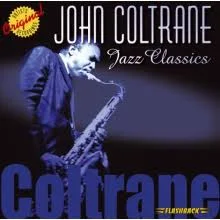
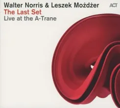
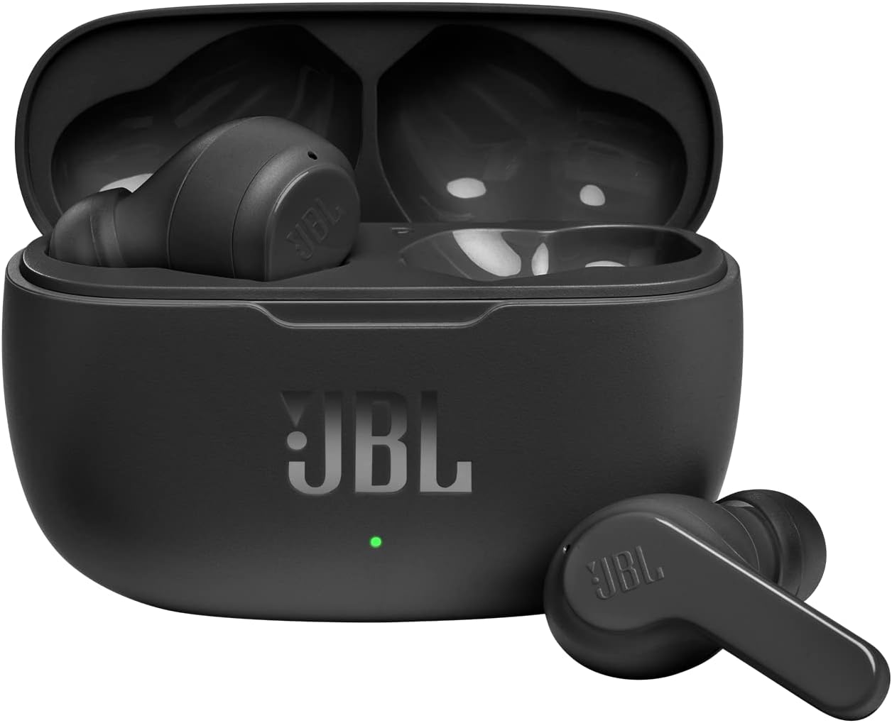
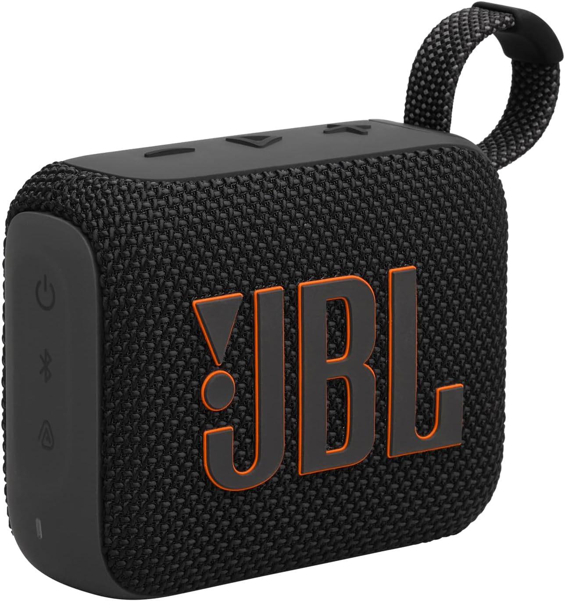

Witamy w sklepie "Patrz szeroko - odkrywaj więcej!"
Jesteśmy pasjonatami muzyki i chcemy dzielić się tą pasją z innymi. Nasz sklep powstał z miłości do dźwięków, które poruszają duszę – od jazzu, przez rocka, aż po elektroniczne brzmienia przyszłości.
Jak powstał nasz sklep?
Wszystko zaczęło się w 2022 roku od małego stoiska na festiwalu muzycznym. Założyciele sklepu postanowili stworzyć miejsce, gdzie każdy znajdzie coś dla siebie: klasyczne płyty winylowe, nowoczesne gadżety muzyczne oraz wyjątkowe wydania kolekcjonerskie. Tak powstało "Patrz szeroko" – sklep z duszą i pasją.
Dziś działamy online i na żywo – stale poszerzamy ofertę, organizujemy spotkania i wspieramy młodych artystów. Dołącz do naszej społeczności melomanów!
Nasza misja
Chcemy nie tylko sprzedawać muzykę, ale także inspirować i edukować. Wierzymy, że muzyka otwiera umysły, dlatego zachęcamy do odkrywania mniej znanych brzmień, wspierania lokalnych artystów i słuchania świadomie.
Nasze nowości

Winyl – Jazz Classics John Coltrane
Zbiór kluczowych kompozycji jednego z najwybitniejszych saksofonistów w historii jazzu. „Jazz Classics” to esencja stylu Coltrane’a – głęboko duchowa, wirtuozerska i pełna emocji. Album prezentuje modalny jazz i hard bop w mistrzowskim wydaniu.
69,99 zł

Walter Norris & Leszek Możdżer – The Last Set
Legendarne spotkanie dwóch mistrzów fortepianu jazzowego – Waltera Norrisa i Leszka Możdżera. „The Last Set” to pełna emocji i ekspresji rejestracja ich wspólnego koncertu, który stał się jednocześnie artystycznym pożegnaniem Norrisa ze sceną.
69,99 zł

JBL Wave 200 TWS
Lekkie, dokanałowe słuchawki True Wireless z technologią JBL Deep Bass i 8 mm przetwornikami. Oferują do 5 h odtwarzania (+15 h etui) bez zakłóceń dzięki Bluetooth 5.0. Mają dotykowe sterowanie, mikrofon, odporność IPX2 i ergonomiczny kształt.
69,99 zł

Głośnik Bluetooth JBL Go 4
Idealny towarzysz w podróży. Dzięki certyfikatowi IP67, kompaktowej konstrukcji i 7 h pracy, oferuje czysty dźwięk JBL Pro Sound. Wspiera Bluetooth 5.3, dual‑connect i aplikację JBL Portable.
69,99 zł
Opinie klientów
„Świetna obsługa i bardzo szybka wysyłka! Płyty są w doskonałym stanie.”
„Kocham to miejsce! Mają unikatowe gadżety i produkty, których nie znajdziesz nigdzie indziej.”
„Obsługa klienta na najwyższym poziomie, polecam każdemu melomanowi.”
„Świetna obsługa i szybka dostawa. Produkt spełnił wszystkie moje oczekiwania!”
Aktualności
Nowa kolekcja płyt winylowych
Wprowadziliśmy do sklepu nowe, limitowane edycje klasycznych płyt winylowych. Sprawdź, co przygotowaliśmy!
Promocja na gadżety muzyczne
W tym miesiącu 20% rabatu na wszystkie słuchawki i głośniki Bluetooth.
Spotkanie z lokalnym artystą
Zapraszamy na wydarzenie online z zespołem Jazz Dreams już 20 lipca. Szczegóły wkrótce!